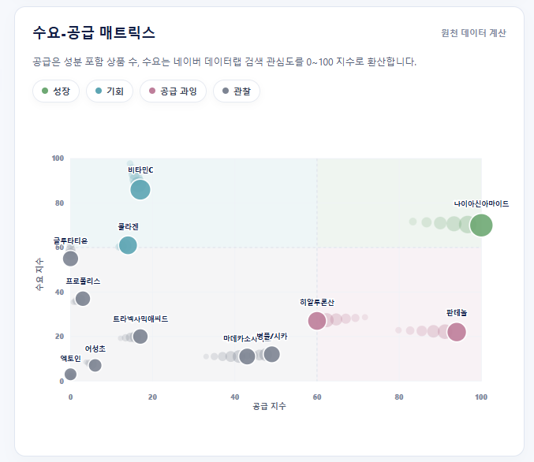
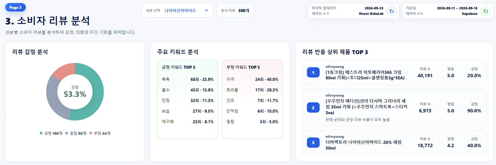
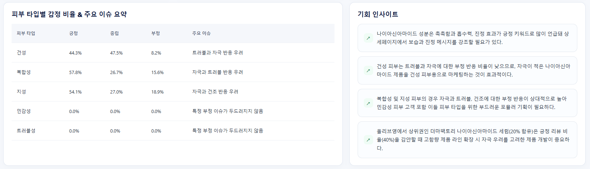
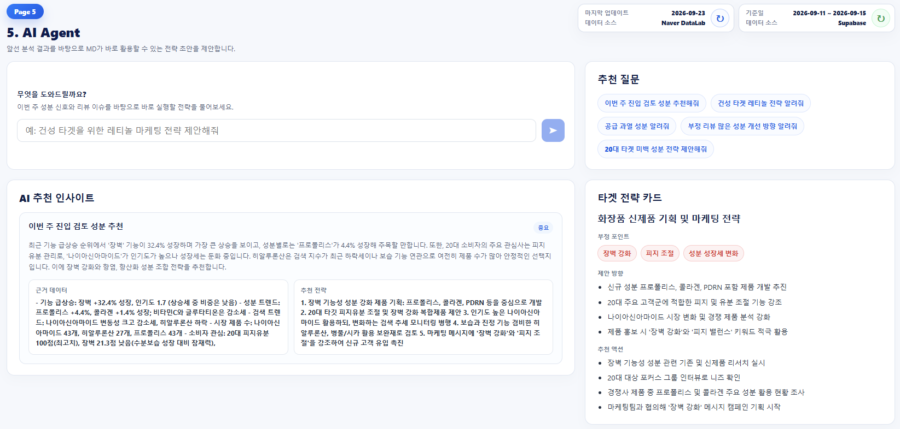

화장품 브랜드의 MD(상품기획자)는 신제품을 기획할 때 검색 수요, 시장 공급 반응을 각각 다른 곳에서 따로 확인해야 합니다.
이 세 가지를 한 화면에서 파악하고, 지금 뜨는 성분·재고 리스크 성분을 AI 인사이트로 자동으로 찾아내 의사결정 시간을 줄이자는
아이디어에서 시작했습니다.
정보
기간2026.04.20 ~ 2026.05.20 (로컬 프로토타입 완성) 2026.08.24 ~ 2026.09.15 (최신 데이터로 크롤링 후 배포 작업 진행)
참여인원4명 (이후 고도화는 1인 진행)
담당 역할데이터 수집(크롤링), DB 적재 파이프라인, 리뷰 감성분석 AI 연동, AI 챗봇(전략 어시스턴트) 프롬프트 엔지니어링, 배포 & 인프라(Render/Vercel/GitHub)
Preview실제 화면

수요-공급 매트릭스 — 성분을 기회/성장/공급과잉/관찰로 자동 분류


소비자 리뷰 분석 — 감성 분석, 키워드, 피부 타입별 이슈, AI 기회 인사이트

AI Agent — 분석 결과 기반 전략 어시스턴트
Features핵심 기능
검색 수요 지수 × 시장 공급 지수를 교차 분석해 성분을 기회 / 성장 / 공급과잉 / 관망 4분면으로 자동 분류, 가격 분포는 바이올린 차트로 시각화
네이버 DataLab 연동으로 성분 검색 관심도 추이, 연령대별 피부 고민 히트맵 제공
한국어 특화 AI 모델(KoELECTRA)로 리뷰 최대 300건을 긍정/중립/부정 자동 분류하고, 성분별 긍·부정 키워드 및 피부타입별 반응 빈도 제공
수요-공급 격차와 트렌드 급증을 자동 감지해 신제품 기회 · 재고 리스크 성분 후보 생성
대시보드 데이터를 근거로 자연어 질의에 답하는 GPT 기반 전략 어시스턴트 (실수치 기반 응답)